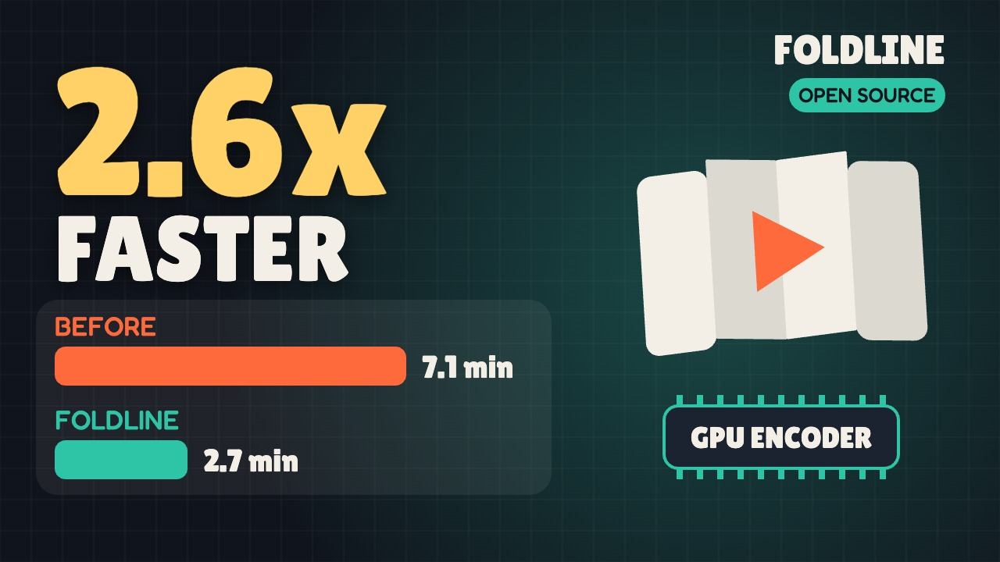

Foldline
Render HTML canvas animations to MP4, fast, on a Mac. With the full lemo-opuscar library of 66 film styles made in code.

Watch the 96-second explainer on YouTube (or download the MP4). Read the deep dive on Medium. Made with Foldline itself: every frame drawn in code, a local text-to-speech voice, music synthesised in code. It renders in 34 s. Source.
What it does
Foldline turns a web page that draws a film in code into an H.264 MP4. You write an HTML page with a <canvas> and a render(t) function. Foldline opens it in headless Chrome, draws every frame, and encodes the video inside the page with WebCodecs on the Mac's hardware encoder, so frames never leave the GPU.
When a page doesn't fit the fast path, Foldline falls back to screenshots with the Mac's VideoToolbox encoder, then x264. It's free and open source, and it works well with coding agents like Claude Code.
Quick start
git clone https://github.com/alireza12t/foldline.git
cd foldline
npm ci
node node_modules/playwright-core/cli.js install chromium-headless-shell
node core/render/video.mjs my-film --size 1920x1080 --fps 60 --out my-film.mp4my-film/index.html sets three things:
window.DUR = 5; // film length in seconds
window.render = (t) => { ... }; // draw the frame at t seconds
window.READY = true; // set once fonts and assets are loadedFor the fast path, draw into one visible <canvas id="c"> of the render size. Needs Node 20+, ffmpeg 7+ and a Mac with Apple Silicon for the fast path.
Results
Measured on an M1 Pro with 16 GB, nothing else running, Nov 6 2026.
| Test | Before | Foldline |
|---|---|---|
| Unfold long video, 8.4 min, 1920x1080, 60 fps | 426 s (screenshots + hardware encoder) | 161 s, 86% less CPU time |
| Unfold Short, 83 s, 1080x1920, 60 fps, full build | 60 s | 29-32 s |
| lemo's Pixel RPG demo, 54.5 s, 1920x1080, 24 fps | 20.8 s, 19.8 s (x264) | 8.1 s, 8.0 s (2.5x) |
Old vs new long video: 42.3 dB on average, lowest frame 39.6 dB. Identical to the eye. Full numbers are in the README.
FAQ
How do I render an HTML canvas animation to MP4?
Make a folder with an index.html that sets window.DUR, window.render(t) and window.READY. Draw the film into one <canvas id="c"> of the render size. Then run node core/render/video.mjs my-film --size 1920x1080 --fps 60 --out my-film.mp4.
Is it faster than screenshots + ffmpeg?
In our tests, yes. The screenshot path copies each frame out of the browser as a JPEG, then ffmpeg decodes it and encodes it again. Foldline hands the canvas straight to Chrome's WebCodecs VideoEncoder with hardware acceleration.
Does it work on Windows or Linux?
It's built and tested on a Mac with Apple Silicon. The fast path needs Chrome's hardware H.264 encoder. Without one, Foldline falls back to the screenshot path, which means x264 on systems without VideoToolbox. It still renders, just not faster. Windows and Linux haven't been tested.
Does my page have to be a single canvas?
For the fast path, yes. Any other page (DOM elements, SVG, several canvases) still renders, through the screenshot path. 35 of the 66 lemo demos fit the fast path.
Can I add sound?
Yes. --audio mix.wav muxes the file in as AAC 192k.
What is lemo-opuscar?
lemo-opuscar is LemoLab's open library of film styles made in code, for Claude Code. Each of the 66 styles has a style prompt and a demo film drawn entirely in code. Foldline includes all of it. Only the video renderer changed.
Is it free?
Yes. The code is MIT. lemo's demo films and stills are CC BY 4.0. It needs only free tools.